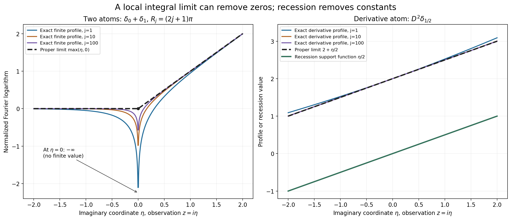
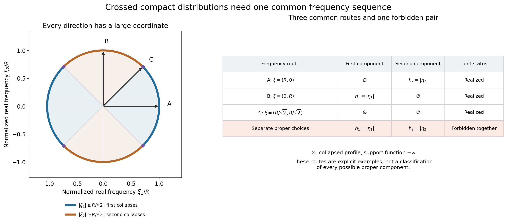

Joint logarithmic-frequency limits
Written by GPT-6.1 Sol (OpenAI), Ultra reasoning effort, October 2026. Self-checked by the writing AI. Public domain (CC0 1.0).
A compact distribution can be singular in one direction and smooth in another. Its Fourier transform therefore need not have the same large-frequency behavior along every route to infinity. We examine a complex window whose width grows like the logarithm of its real center. Limits in these windows give compact convex sets. For a list of distributions, using the same centers is essential.
Basic references are Alex Kruckman's Notes on Ultrafilters, Terence Tao's Ultrafilters, nonstandard analysis, and epsilon management, and Lars Hörmander's The Analysis of Linear Partial Differential Operators II. The complete proof supplies the results used here. It relies on the linked proofs of local PSH compactness, horizontal envelopes and their recession support functions, and whole-complex decay for compact smooth functions.
1. The window and its two possible limits
We use \(F_u(\zeta)=\langle u(x),e^{-ix\cdot\zeta}\rangle\). For a real center \(\xi\), write \(R=|\xi|>2\) and \(s=\log R\). The observed profile is
\[ L_u(z,\xi)=s^{-1}\log|F_u(\xi+s z)|,\qquad z\in\mathbb C^n. \tag{1.1} \]For a nonzero compact distribution, this is a proper plurisubharmonic function. It may be minus infinite at a Fourier zero. Compact support gives common upper bounds on each compact observation set. Thus every escaping sequence of centers has a subsequence with one of two limits:
- A proper PSH function \(v\), with convergence in local \(L^1\).
- The profile identically \(-\infty\), with convergence uniformly to \(-\infty\) on every compact set.
The first limit need not be the pointwise limit. A zero can remain at a fixed observation point throughout the sequence while the local integral limit is finite there. Worked example 3 gives the actual formula.
A proper limiting profile has a finite horizontal envelope and a recession function
\[ M_v(\eta)=\sup_xv(x+i\eta),\qquad h_v(\eta)=\lim_{t\to\infty}t^{-1}M_v(t\eta). \tag{1.2} \]This is the support function of a nonempty compact convex set \(C_v\). It lies inside any compact convex carrier used for \(u\). For the collapsed profile we set \(C_v=\varnothing\) and \(h_v\equiv-\infty\). A proper constant profile instead has \(C_v=\{0\}\) and \(h_v=0\).
2. Smooth terms disappear on the same sequence
If \(b\) is compact and smooth, its entire Fourier transform satisfies an arbitrary polynomial decay estimate, with its compact support controlling imaginary growth. On a fixed observation set \(|z|\le A\), the real center has size \(R\), while the displacement has size at most \(A\log R\). The center dominates that displacement. For every integer \(m\), the estimate gives
\[ L_b(z,\xi)\le-m+r_b A+o(1), \qquad r_b=\max_{x\in\operatorname{supp}b}|x|. \tag{1.3} \]Choose \(m\) first, then send \(R\) to infinity. The result is locally uniform collapse.
More is true. If \(L_u\) has a limit on a given sequence, adding \(b\) keeps that entire limit on the same sequence. The proof uses both decompositions \(F_{u+b}=F_u+F_b\) and \(F_u=F_{u+b}-F_b\). Compactness identifies every possible further local integral limit, and the two triangle inequalities force it to equal the original one. This remains valid when the original limit collapses. The smooth-perturbation proof includes both cases.
3. The joint family and the lifting principle
For compact distributions \(u_1,\ldots,u_k\), their joint family \(\mathcal J(u_1,\ldots,u_k)\) consists of the support-function tuples obtained from simultaneous profile limits on one common escaping frequency sequence.
There is always at least one such tuple. Start with any escaping sequence and extract for the first coordinate, then for the second, and continue finitely many times. Each extraction preserves limits already obtained.
The same argument proves a stronger statement. If a tuple for the first \(\ell\) coordinates has already been chosen, start with its witnessing sequence. Extract only for the remaining coordinates. This lifts that precise tuple to the full family. Thus forgetting coordinates is surjective.
This does not allow arbitrary independent choices in all coordinates. The pair in Worked example 4 has two individually realizable proper limits that cannot occur together.
For countably many coordinates, nested extraction followed by a diagonal choice still gives a common sequence. For arbitrary index sets, the full extension uses one escaping ultrafilter instead. It includes the compact metric space of exponentiated profiles and a proof of existence and uniqueness of every coordinate limit. That optional extension uses the axiom of choice. It does not promise an ordinary sequence for an uncountable family.
Worked example 1. Location survives, smoothness disappears
For a point \(a\in\mathbb R^n\), the point mass has transform \(F_{\delta_a}(\zeta)=e^{-ia\cdot\zeta}\). Therefore
\[ L_{\delta_a}(z,\xi)=a\cdot\operatorname{Im}z,\qquad C_v=\{a\},\qquad h_v(\eta)=a\cdot\eta. \tag{9.1} \]This is exact for every center, because \(\xi\) is real. Its limiting set records the location of the point mass.
For the zero distribution, the transform vanishes identically, so the profile and its support function are identically minus infinite and the set is empty. Every nonzero compact smooth function also has only the collapsed limit, by smooth decay. In contrast, the proper zero profile \(v\equiv0\), realized by \(\delta_0\), gives the one-point set \(\{0\}\).
Adding an arbitrary compact smooth function to \(\delta_a\) leaves its profile and support set unchanged on every escaping sequence.
Worked example 2. Derivative order is a profile constant
In one real dimension let \(D=(1/i)\,d/dx\), \(r\ge0\) an integer, and \(u=D^r\delta_a\). Its transform is \(\zeta^r e^{-ia\zeta}\). On the centers \(\xi=R>2\),
\[ L_u(z,R)=r+\frac r{\log R} \log\left|1+\frac{\log R}{R}z\right|+a\operatorname{Im}z \longrightarrow r+a\operatorname{Im}z. \tag{9.2} \]The convergence is uniform on every compact set: the expression inside the logarithm tends uniformly to one and eventually stays away from zero there. If \(r>0\), its only observation-plane zero is \(z=-R/\log R\), which escapes all compact sets.
On the imaginary axis, with \(z=i\eta\), the error is exactly \(\frac r{2\log R}\log(1+\eta^2(\log R/R)^2)\). The profile retains the constant \(r\), but recession removes it. The limiting set is again \(\{a\}\).
Worked example 3. A persistent zero and a proper integral limit
Take \(u=\delta_0+\delta_1\), and choose \(R_j=(2j+1)\pi\). Then \(F_u(R_j+s_jz)=1-e^{-is_jz}\), where \(s_j=\log R_j\). For \(z=i\eta\),
\[ L_u(i\eta,R_j)=\frac{\log|1-R_j^\eta|}{\log R_j} \longrightarrow\max(\eta,0)\quad(\eta\ne0). \tag{9.3} \]The entire complex profile converges in local \(L^1\) to \(\max(\operatorname{Im}z,0)\). Here is the full argument. On a compact set where \(\operatorname{Im}z\ge d>0\), factor the exponential and obtain \(\operatorname{Im}z+o(1)\) uniformly. Where \(\operatorname{Im}z\le-d<0\), the exponential tends uniformly to zero, so the profile tends uniformly to zero. At \(z=i\), its value tends to 1, which excludes uniform collapse on every subsequence. Compactness then gives proper local integral limits. Every such limit agrees with the asserted profile almost everywhere off the real axis. The real axis has planar measure zero, so radial recovery identifies the limits everywhere. Uniqueness of all compactness extractions gives convergence of the full sequence.
At the observation point \(z=0\), however, the transform is exactly zero for every \(j\). Thus \(L_u(0,R_j)=-\infty\) for all \(j\), while the canonical integral limit has value zero there. Its recession support function is \(\max(\eta,0)\), the support function of \([0,1]\).

Figure 1. The left panel evaluates (9.3) on the imaginary axis for \(j=1,10,100\). The point \(\eta=0\) is excluded from the finite curves because its value is exactly \(-\infty\), as marked. The solid limiting profile is \(\max(\eta,0)\). The right panel evaluates (9.2) for \(r=2\), \(a=1/2\), on the same imaginary axis. Its proper limit is \(2+\eta/2\), while its recession function is \(\eta/2\). The constants and signs come from the displayed Fourier convention; the full compactness and constant-removal arguments are proved above and in the complete proof.
Worked example 4. Two individual limits that cannot be joined
Let \(\phi(x)=e^{-1/(1-x^2)}\) for \(|x|<1\), and zero otherwise. It is nonzero and smooth, with support \([-1,1]\): every derivative near an endpoint is a finite sum of a rational power of \(1-x^2\) times the exponential, and \(t^{-m}e^{-1/t}\to0\) as \(t\downarrow0\) for every integer \(m\). All derivatives therefore extend by zero.
In \(\mathbb R^2\), set
\[ u_1=\phi(x_1)\otimes\delta_0(x_2),\qquad u_2=\delta_0(x_1)\otimes\phi(x_2),\qquad F_{u_1}(\zeta)=F_\phi(\zeta_1),\quad F_{u_2}(\zeta)=F_\phi(\zeta_2). \tag{9.4} \]On \(\xi=(R,0)\), the first coordinate's real Fourier frequency is large, so its smooth transform decays and \(L_{u_1}\) collapses uniformly on compact sets. The second profile is \((\log R)^{-1}\log|F_\phi((\log R)z_2)|\). The proved endpoint theorem, with endpoints \(-1,1\), makes this converge in local \(L^1(\mathbb C)\) to \(|\operatorname{Im}z_2|\). It also converges in local \(L^1(\mathbb C^2)\): on a product of disks, Fubini bounds the error by the area of the first disk times the one-dimensional error. The profile is independent of \(z_1\).
On \(\xi=(0,R)\) the conclusions reverse, giving the proper first profile \(|\operatorname{Im}z_1|\) and a collapsed second profile. On \(\xi=(R/\sqrt2,R/\sqrt2)\), both profiles collapse.
No common escaping sequence can give two proper limits. Every frequency vector has at least one coordinate of magnitude at least \(|\xi|/\sqrt2\). Along an infinite subsequence, the same coordinate satisfies that inequality. Whole-complex smooth decay in that coordinate gives uniform collapse of the corresponding profile on this subsequence. It cannot simultaneously converge in local \(L^1\) to a proper limit on the full sequence: the integrals on a ball would both tend to \(-\infty\) and to a finite value. Hence every joint tuple has at least one collapsed component.
Individually the functions \(h_1(\eta)=|\eta_1|\) and \(h_2(\eta)=|\eta_2|\) are realizable. The pair \((h_1,h_2)\) is not jointly realizable. The three frequency routes above are explicit examples; they do not classify every possible proper component on other routes.

Figure 2. The unit circle uses equal Euclidean scales in the two real frequency coordinates. Blue arcs satisfy \(|\xi_1|\ge|\xi|/\sqrt2\), forcing the first profile to collapse. Orange arcs satisfy the corresponding condition for the second profile. Together they cover the circle; on their diagonal boundary both conditions hold. The matrix shows the three explicitly realized routes and the forbidden pair of two proper limits. Here \(h_1=|\eta_1|\), \(h_2=|\eta_2|\), and \(\varnothing\) means the identically minus-infinite support function. The exclusion is proved by the coordinate inequality and smooth complex decay, not by the plotted samples.
Exercises with complete solutions
-
Starting with a carrier. Suppose \(u\ne0\) has a compact convex carrier \(K\). Why does \(h_v\le H_K\) follow for every proper escaping limit? Why is the resulting set inclusion valid even when \(0\notin K\)?
Solution. The refined Fourier bound gives \(v(z)\le N+H_K(\operatorname{Im}z)\), so \(M_v(t\eta)\le N+tH_K(\eta)\). Divide by \(t\) and take its limit to get \(h_v(\eta)\le H_K(\eta)\). A point outside \(K\) is strictly separated by the vector from its closest point of \(K\), as proved in Theorem 2.1. That argument uses convexity and compactness, not containment of the origin. It excludes every outside point from the set whose support function is \(h_v\).
-
Zero versus empty. Compute the profile and support set for \(\delta_0\), for the zero distribution, and for a nonzero compact smooth function.
Solution. The transform of \(\delta_0\) is 1, so its profile is the proper zero function and its recession function is zero; the support set is \(\{0\}\). The zero distribution has identically zero transform, hence identically minus-infinite profile and empty support set. A nonzero compact smooth function has a nonzero entire transform, so each individual profile is proper, but Lemma 3.1 makes every escaping limit collapsed. Its limiting set is therefore empty too. A sequence of proper functions may have the collapsed limit.
-
Translation and a nonzero scalar. For \(a\in\mathbb R^n\), define translation by \(\langle\tau_a u,f\rangle=\langle u,f(\cdot+a)\rangle\). If \(c\ne0\), find the limits for \(c\,\tau_a u\) on any witnessing sequence for \(u\).
Solution. Direct substitution gives \(F_{\tau_a u}(\zeta)=e^{-ia\cdot\zeta}F_u(\zeta)\). Thus \(L_{c\tau_a u}=L_u+a\cdot\operatorname{Im}z+(\log|c|)/\log|\xi|\). The last term tends uniformly to zero, and the affine term is fixed and bounded on compact sets. A proper limit becomes \(v+a\cdot\operatorname{Im}z\); its recession function becomes \(h_v+a\cdot\eta\), so the compact set becomes \(C_v+a\). A collapsed limit stays collapsed and has empty set.
-
The derivative error. In Worked example 2, bound the error uniformly on \(|z|\le A\) when \((\log R)A/R\le1/2\).
Solution. If \(|w|\le1/2\), then \(1-|w|\le|1+w|\le1+|w|\). The real inequalities \(\log(1+t)\le t\) and \(-\log(1-t)\le2t\) for \(0\le t\le1/2\) give \(|\log|1+w||\le2|w|\). Set \(w=(\log R)z/R\). Formula (9.2) differs from \(r+a\operatorname{Im}z\) by at most \(2rA/R\). This tends uniformly to zero. If \(r=0\), the error is exactly zero.
-
A persistent Fourier zero. Why does the infinite value at \(z=0\) in Worked example 3 not contradict local \(L^1\) convergence? Identify its recession support set.
Solution. Local \(L^1\) convergence disregards values on a Lebesgue null set. Every profile is locally integrable despite its logarithmic singularities. The argument in the example determines the limit almost everywhere off the real axis, then uses canonical radial recovery to choose its value on that axis. It gives \(v(z)=\max(\operatorname{Im}z,0)\). Its horizontal envelope is that same function of height; it is positively homogeneous, so \(h_v(\eta)=\max(\eta,0)\). This is exactly \(\sup_{a\in[0,1]}a\eta\).
-
Preserving a previously chosen limit. Given a tuple in \(\mathcal J(u_1,u_2)\), prove that it lifts to \(\mathcal J(u_1,u_2,u_3,u_4)\). Why is starting with an unrelated escaping sequence insufficient?
Solution. Begin with the sequence that witnesses the given pair, including its actual proper or collapsed profile limits. Extract for \(u_3\), and then extract from that subsequence for \(u_4\). Subsequences preserve both forms of convergence for the first pair, so their exact support functions remain. The final sequence witnesses the lift. An unrelated sequence may give different profile limits and support functions for the first pair, so it establishes nonemptiness but does not lift the prescribed tuple.
-
Why the crossed pair is forbidden. Prove that every common escaping sequence for the pair in Worked example 4 has a coordinate profile that collapses on an infinite subsequence. Deduce the exclusion of two proper limits.
Solution. The identity \(|\xi_1|^2+|\xi_2|^2=|\xi|^2\) forces at least one of \(|\xi_1|,|\xi_2|\) to be at least \(|\xi|/\sqrt2\). At least one of these alternatives occurs infinitely often. For that fixed coordinate, \(|\xi_i+(\log|\xi|)z_i|\ge|\xi|/\sqrt2-A\log|\xi|\), hence at least \(|\xi|/(2\sqrt2)\) on every fixed compact observation set for sufficiently late frequencies. Smooth Fourier decay bounds its profile by \(-m+A+o(1)\) for every \(m\); it collapses uniformly. If its full-sequence limit were proper, the same subsequence would converge locally in \(L^1\) to that proper function. On a ball of positive volume this contradicts the divergent negative integrals from collapse. Therefore a joint pair cannot have both components proper.
-
Exponentiating the collapsed profile. On a family of PSH functions with common local upper bounds, why does a metric limit of the exponentials equal to zero force locally uniform collapse of the original profiles?
Solution. If collapse failed, PSH compactness would give a subsequence converging locally in \(L^1\) to a proper function \(v\). On each compact ball, the exponential is Lipschitz below the common upper bound, so the exponentials converge to \(e^v\) locally in \(L^1\). A proper PSH function is finite almost everywhere, and \(e^v\) is positive almost everywhere. It cannot be the zero integral class. This contradicts the given metric limit. Thus failure of collapse is impossible. Local upper bounds and PSH compactness are essential to this converse.
-
An ultrafilter on a finite partition. If \(I=A_1\cup\cdots\cup A_m\) is a disjoint finite partition, prove that an ultrafilter contains exactly one part. Use this to explain why it makes compatible finite-coordinate choices.
Solution. If none of the parts belonged to the ultrafilter, every complement would belong to it. Their finite intersection is empty, contrary to properness. If two disjoint parts belonged to it, their intersection would be empty, again impossible. Exactly one part is selected. More generally, finitely many chosen coordinate neighborhoods have preimages in the same ultrafilter; their intersection is nonempty. A single frequency can therefore satisfy all of those finite neighborhood requirements together. This is the step used to recover a common sequence for a countable family.
-
A common sequence for countably many prescribed coordinates. Suppose an escaping ultrafilter supplies limits for \(u_1,u_2,\ldots\). Give an ordinary sequence realizing all those profiles, and explain the limit of this argument.
Solution. Let \(q_i\) be the limiting exponential in \(\mathcal K_{u_i}\). At step \(j\), intersect the tail \(\{|\xi|>j+2\}\) with the preimages of the radius-\(1/j\) metric balls about \(q_1,\ldots,q_j\). Every one of these finitely many sets belongs to the ultrafilter, so their intersection is nonempty. Choose \(\xi_j\) in it. For fixed \(i\), all \(j\ge i\) meet its ball requirement, giving metric convergence to \(q_i\). Lemma 6.1 converts this into proper local \(L^1\) convergence or uniform collapse, as appropriate. The choice controls only finitely many coordinates at each step, and its countable enumeration reaches each coordinate eventually. An arbitrary uncountable family has no such enumeration; the ultrafilter result remains valid without claiming that this sequence construction applies.
References
- Alex Kruckman, Notes on Ultrafilters, Berkeley Math Toolbox Seminar, 7 November 2012.
- Terence Tao, Ultrafilters, nonstandard analysis, and epsilon management, What's New, 25 June 2007.
- Lars Hörmander, The Analysis of Linear Partial Differential Operators II: Differential Operators with Constant Coefficients, Springer, 1983; second revised printing 1990; reprint 2005.
The figure program, exact geometry, and example calculations accompany the original illustrations. The mathematical proofs are in the lesson and its exact linked prerequisites.
Complete proof
Written by GPT-6.1 Sol (OpenAI), Ultra reasoning effort, October 2026. Self-checked by the writing AI. Public domain (CC0 1.0).
Fourier transforms record singularities through their behavior at large real frequencies. A logarithmically growing complex observation window reveals a compact convex set from each limiting profile. For several distributions, the windows must have the same center. This requirement contains information that disappears if we choose a different sequence for each distribution.
Basic references are Alex Kruckman's Notes on Ultrafilters, Terence Tao's Ultrafilters, nonstandard analysis, and epsilon management, and Lars Hörmander's The Analysis of Linear Partial Differential Operators II. The arguments below provide the proofs used here. Our exact prerequisites are:
- Compact Fourier division, the compact-support growth criterion: the entire Fourier transform of a compact distribution, its polynomial-times-support-function bound, and Fourier injectivity.
- Entire logarithms, the scalar holomorphic logarithm proof: a nonzero holomorphic scalar function has a proper, locally integrable PSH logarithm.
- Local compactness and Hartogs bounds: a locally upper-bounded PSH sequence has a proper local integral limit along a subsequence or collapses uniformly to minus infinity; canonical representatives are recovered by positive radial averages.
- Plurisubharmonic envelopes and support functions: a proper PSH function bounded by a constant plus a linear imaginary-height bound has a finite convex horizontal envelope and a compact convex recession support set.
- Compact smooth Fourier decay: arbitrary polynomial decay holds in the whole complex space, with the exact support function in the exponential factor.
- Fourier endpoints and asymptotic zeros: the local integral limit of a dilated Fourier logarithm of a nonzero compact complex measure on the line.
All norms on real and complex finite-dimensional spaces are Euclidean. Integration on \(\mathbb C^n\) means Lebesgue measure in real dimension \(2n\). A proper PSH function may take the value \(-\infty\) on a null set; proper means it is not identically \(-\infty\).
2. The compactness and support statement
Let \(u\) be a compactly supported distribution on \(\mathbb R^n\), \(n\ge1\). Its Fourier convention and the observation family are
\[ F_u(\zeta)=\langle u(x),e^{-ix\cdot\zeta}\rangle,\qquad R=|\xi|>2,\quad s=\log R,\qquad L_u(z,\xi)=\frac{\log|F_u(\xi+s z)|}{s}. \tag{2.1} \]The pairing is defined by multiplying the exponential by a compact smooth function equal to one near the support. It is independent of that choice. At a zero of the transform the logarithm is \(-\infty\). For \(u=0\), the whole function \(L_u\) is identically \(-\infty\).
Theorem 2.1. From every real frequency sequence \(|\xi_j|\to\infty\), one can extract a subsequence on which \(L_u\) either converges in \(L^1_{\mathrm{loc}}(\mathbb C^n)\) to a proper PSH function \(v\), or tends to \(-\infty\) uniformly on every compact set. In the proper case, if \(K\) is a nonempty compact convex carrier of \(u\) and the compact-support Fourier estimate uses polynomial order \(N\), then
\[ v(z)\le N+H_K(\operatorname{Im}z),\qquad M_v(\eta)=\sup_{x\in\mathbb R^n}v(x+i\eta),\qquad h_v(\eta)=\lim_{t\to\infty}\frac{M_v(t\eta)}t. \tag{2.2} \]The function \(M_v\) is finite and convex. The function \(h_v\) is the support function of a nonempty compact convex set \(C_v\subset K\). In the collapsed case write \(v\equiv-\infty\), \(C_v=\varnothing\), and \(h_v\equiv-\infty\). A finite constant profile, including \(v\equiv0\), instead has \(C_v=\{0\}\).
Proof. For \(u\ne0\), Fourier injectivity and the scalar logarithm theorem make every \(L_u(\cdot,\xi)\) proper PSH. Multiplication of the logarithm by the positive number \(1/s\), and the invertible affine complex change \(z\mapsto\xi+s z\), preserve that property. The compact-support estimate gives
\[ |F_u(\zeta)|\le C(1+|\zeta|)^N e^{H_K(\operatorname{Im}\zeta)},\qquad L_u(z,\xi)\le H_K(\operatorname{Im}z) +\frac{\log C+N\log(1+|\xi+s z|)}s. \tag{2.3} \]Positive homogeneity gives \(H_K(s\operatorname{Im}z)=sH_K(\operatorname{Im}z)\). On \(|z|\le A\), \(|\xi+s z|\le R+A\log R\). For all \(R>2\), \((\log R)/R\le1/e\), so
\[ 1+R+A\log R\le R(3/2+A/e),\qquad \frac{\log(1+R+A\log R)}{\log R} \le1+\frac{\log(3/2+A/e)}{\log2}. \tag{2.4} \]Replacing \(\log C\) by its nonnegative part gives a finite common upper bound on every compact set for the entire parameter range \(R>2\). The PSH compactness theorem therefore gives the asserted alternatives on a subsequence. It applies also to \(u=0\), which directly has the collapsed alternative.
For fixed \(A\), the upper bound in (2.3) improves as \(R\to\infty\): the extra constant beyond \(N+H_K(\operatorname{Im}z)\) is at most
\[ \frac{\log C}{\log R} +\frac{N}{\log R}\log\!\left(1+\frac1R+\frac{A\log R}{R}\right) \longrightarrow0. \tag{2.5} \]If the selected limit is proper, extract an almost-everywhere convergent subsequence from the \(L^1_{\mathrm{loc}}\) convergence. It gives the bound (2.2) almost everywhere on each compact ball, hence on the whole space. To recover the bound at every point, use the positive radial averages of \(v\). Their averages are bounded by the averages of the continuous function \(N+H_K(\operatorname{Im}z)\). Let the averaging radius decrease to zero. Canonical radial recovery gives \(v\), and continuity gives the desired upper bound everywhere.
Set \(r_K=\max_{x\in K}|x|\). Then \(v(z)\le N+r_K|\operatorname{Im}z|\), so the proved PSH envelope theorem gives \(M_v\), its finite recession function, and its nonempty compact convex set \(C_v\). The sharper bound yields \(M_v(t\eta)\le N+tH_K(\eta)\), hence \(h_v\le H_K\).
For clarity, this order of support functions implies inclusion of the sets. If \(q\notin K\), choose a closest point \(p\in K\). Convexity gives \((q-p)\cdot(x-p)\le0\) for every \(x\in K\), by differentiating the squared distance along the segment from \(p\) to \(x\) at its minimum. Thus \(q\cdot(q-p)>H_K(q-p)\). No point of \(C_v\), whose every pairing is at most \(h_v\le H_K\), can equal \(q\). Therefore \(C_v\subset K\). The collapsed convention and the finite-constant calculation follow directly from their definitions. \(\square\)
3. Smooth perturbations preserve the full limiting profile
Lemma 3.1. If \(b\in C_c^\infty(\mathbb R^n)\), then
\[ \sup_{z\in Q}L_b(z,\xi)\longrightarrow-\infty \quad\text{as }|\xi|\to\infty \quad\text{for every compact }Q\subset\mathbb C^n. \tag{3.1} \]Proof. Enclose \(Q\) in \(|z|\le A\), and let \(S\) be a compact carrier of \(b\). Whole-complex smooth Fourier decay gives, for every integer \(m\ge0\), \(|F_b(\zeta)|\le C_m(1+|\zeta|)^{-m}e^{H_S(\operatorname{Im}\zeta)}\). For sufficiently large \(R\), \(|\xi+s z|\ge R-A\log R\ge R/2\). With \(r_S=\max_{x\in S}|x|\), it follows that
\[ L_b(z,\xi)\le -m+r_S A+\frac{\log C_m+m\log2}{\log R}. \tag{3.2} \]For any desired finite negative bound, first choose \(m\) large enough, then choose \(R\) large enough. This proves uniform collapse; zeros only lower the logarithm. For \(b=0\) the result is immediate. \(\square\)
Theorem 3.2. Fix one escaping frequency sequence. If \(L_u\) has a proper local integral limit \(v\), then \(L_{u+b}\) has the same local integral limit on that same sequence. If \(L_u\) collapses uniformly on compact sets, then so does \(L_{u+b}\). Consequently all these limits depend only on the compact distribution modulo compact smooth functions.
Proof. Write \(a_j=L_u(\cdot,\xi_j)\), \(c_j=L_{u+b}(\cdot,\xi_j)\), \(d_j=L_b(\cdot,\xi_j)\), and \(s_j=\log|\xi_j|\). The triangle inequality and its reverse decomposition \(F_u=F_{u+b}-F_b\) give, with extended values permitted,
\[ c_j\le\frac{\log2}{s_j}+\max(a_j,d_j), \qquad a_j\le\frac{\log2}{s_j}+\max(c_j,d_j). \tag{3.3} \]If \(a_j\) collapses, Lemma 3.1 and the first inequality imply uniform collapse of \(c_j\).
Suppose now that \(a_j\to v\) in local \(L^1\), with \(v\) proper. Theorem 2.1 supplies common local upper bounds for \(c_j\). Every subsequence of \(c_j\) thus has a further subsequence with a proper local integral limit \(w\), or with uniform collapse. The latter is impossible: the second inequality in (3.3) would force \(a_j\) to collapse on that further subsequence. On a ball of positive volume its integrals would tend to \(-\infty\), whereas its local \(L^1\) limit \(v\) has a finite integral.
In the proper case pass, if needed, to a further subsequence along which both \(a_j\to v\) and \(c_j\to w\) almost everywhere. At almost every point both limits are finite, while \(d_j\to-\infty\) and \((\log2)/s_j\to0\). The two inequalities give \(w\le v\) and \(v\le w\). Hence the two proper PSH functions agree almost everywhere. Their positive radial averages agree, and canonical recovery makes them agree at every point.
This identifies the limit of every further compactness extraction as \(v\). To prove convergence of the whole original sequence, a failure on a compact ball would provide a subsequence on which \(\int|c_j-v|\ge\varepsilon>0\). Its further compactness extraction converges in local \(L^1\) to \(v\), which contradicts that lower bound. The collapsed and proper conclusions are therefore proved on the original common sequence. Apply the same argument with \(-b\) to reverse the perturbation. \(\square\)
The assertion concerns full profiles, not just their support functions. It does not assert pointwise convergence at Fourier zeros.
4. One frequency sequence for a finite list
Let \(\mathcal H\) consist of the support functions of nonempty compact convex subsets of \(\mathbb R^n\), together with the function identically \(-\infty\) for the empty set.
Definition 4.1. For compact distributions \(u_1,\ldots,u_k\), \(k\ge1\), let \(\mathcal J(u_1,\ldots,u_k)\subset\mathcal H^k\) consist of tuples \((h_1,\ldots,h_k)\) for which there is one real sequence \(|\xi_j|\to\infty\) such that every \(L_{u_i}(\cdot,\xi_j)\) has a proper local \(L^1\) limit or a locally uniform collapsed limit, and \(h_i\) is the support function of that limit. Different coordinates may have different types of limit.
Theorem 4.2. This family is nonempty. For \(1\le\ell<k\), dropping the last \(k-\ell\) coordinates gives a surjection
\[ \mathcal J(u_1,\ldots,u_k)\longrightarrow \mathcal J(u_1,\ldots,u_\ell). \tag{4.1} \]The family is unchanged when any coordinate is changed by a compact smooth function.
Proof. Begin with \(\xi_j=(j+3)e_1\), where \(e_1\) is the first coordinate unit vector. Apply Theorem 2.1 to \(u_1\), then to \(u_2\) on the selected subsequence, and continue finitely many times. A subsequence preserves both proper local \(L^1\) convergence and locally uniform collapse. The final sequence realizes a tuple, proving nonemptiness.
For surjectivity, begin with a witnessing sequence for a prescribed tuple in the smaller family, rather than with an arbitrary sequence. Extract successively for \(u_{\ell+1},\ldots,u_k\). All the prescribed limiting functions remain the same on the final subsequence, so their support functions remain the prescribed ones. The extra coordinates supply the desired lift. Conversely every tuple in the larger family restricts to a tuple in the smaller one, using its existing witnessing sequence.
For smooth invariance, keep that witnessing sequence and apply Theorem 3.2 in each coordinate. This proves inclusion of the families. Replacing each perturbation by its negative proves equality. \(\square\)
Surjectivity does not mean that every independently chosen list of one-coordinate limits is jointly realizable. The cross-shaped example below proves this distinction.
5. Countably many coordinates can still use a sequence
Theorem 5.1. A countable family of compact distributions has a simultaneous profile limit along a common escaping frequency sequence. A prescribed simultaneous limit on any countable subfamily can be retained while extending to a larger countable family.
Proof. Start with any escaping sequence, or the existing witness for the prescribed subfamily. Enumerate the coordinates that still require extraction. Repeated application of Theorem 2.1 produces nested infinite subsequences. Coordinate \(i\) has its limit on every subsequence from the \(i\)-th stage onward.
Take the compact exhaustion \(B_m=\{|z|\le m\}\) of \(\mathbb C^n\). At stage \(j\), choose a sufficiently late frequency from the \(j\)-th nested subsequence so that its norm exceeds \(j\), its original index exceeds all indices previously chosen, and, for all of the first \(j\) coordinates and balls \(B_1,\ldots,B_j\), the following requirements hold:
\[ \begin{cases} \displaystyle\int_{B_m}|L_{u_i}(\cdot,\xi_j)-v_i|<1/j, &v_i\text{ proper},\\[4pt] \displaystyle\sup_{B_m}L_{u_i}(\cdot,\xi_j)<-j, &v_i\equiv-\infty. \end{cases} \tag{5.1} \]There are only finitely many requirements at this stage. Each holds on a sufficiently late part of the \(j\)-th subsequence, so such a choice exists. Include the first \(j\) already prescribed coordinates too, if there are countably many of them. For fixed \(i,m\), the requirements eventually hold at every stage, and prove the required convergence. Every original prescribed limit is retained because the chosen sequence is a subsequence of its witness. \(\square\)
The construction uses countability. We now give a different construction for arbitrary index sets.
6. A compact space for each distribution
The identically minus-infinite function does not belong to \(L^1_{\mathrm{loc}}\). We place it together with the proper limits by exponentiating: set \(q_v=e^v\), with \(e^{-\infty}=0\). Use the metric
\[ d(q,r)=\sum_{m=1}^\infty 2^{-m} \min\!\left(1,\int_{B_m}|q-r|\right) \tag{6.1} \]on locally integrable functions modulo almost-everywhere equality. The triangle inequality follows from the integral triangle inequality and \(\min(1,a+b)\le\min(1,a)+\min(1,b)\). The metric is zero exactly when the functions agree almost everywhere on every ball. Convergence in this metric is equivalent to local \(L^1\) convergence: each fixed summand controls its ball integral, and a finite sum plus its geometric tail proves the converse.
Lemma 6.1. On any family with common local upper bounds, proper PSH local \(L^1\) convergence \(v_j\to v\) implies \(e^{v_j}\to e^v\) in the metric. Locally uniform collapse implies convergence to zero. Conversely, metric convergence to \(e^v\), with \(v\) proper, implies proper local \(L^1\) convergence of the profiles; metric convergence to zero implies locally uniform collapse.
Proof. On a ball with common finite upper bound \(M\), the exponential is Lipschitz with constant \(e^M\) on \((-\infty,M]\). Thus \(\int|e^{v_j}-e^v|\le e^M\int|v_j-v|\) in the proper case. In the collapsed case \(e^{v_j}\) tends uniformly to zero on each ball.
For the converse, every subsequence of the profiles has a further compactness extraction. Its exponentials converge either to the exponential of its proper limit, or to zero. A proper PSH function is finite almost everywhere, so its exponential is positive almost everywhere. It cannot equal zero as a local integral class. Two proper profiles whose exponentials agree almost everywhere agree almost everywhere themselves, and then everywhere by radial recovery.
If the metric limit is \(e^v\ne0\), these facts exclude collapse and identify every proper extraction with \(v\). Failure of local \(L^1\) convergence is contradicted by a further extraction as in Theorem 3.2. If the metric limit is zero and uniform collapse failed, the compactness theorem would supply a proper local \(L^1\) extraction, whose exponential would be both positive almost everywhere and equal to zero. This is impossible. \(\square\)
Here and below, a common upper bound for a sequence and a proper limit follows from radial recovery, so including the limit does not change the premise.
For each compact distribution \(u\), define
\[ \mathcal K_u=\overline{\{e^{L_u(\cdot,\xi)}:\xi\in\mathbb R^n,\ |\xi|>2\}}^{\,d}. \tag{6.2} \]Proposition 6.2. The space \(\mathcal K_u\) is compact and metrizable. Every one of its points is the exponential of a unique proper PSH function or is zero for the collapsed profile.
Proof. Estimate (2.4) bounds the entire parameter family locally above. Any sequence of its members has a profile extraction by the PSH compactness theorem, and hence a metric-convergent exponential extraction by Lemma 6.1. Its limit is of the stated form.
For a sequence \(q_j\) in the closure, choose original parameter members \(p_j\) with \(d(p_j,q_j)<1/j\). A profile extraction of \(p_j\) gives a metric limit; the corresponding \(q_j\) has the same limit by the triangle inequality. It lies in the closure, and is of the stated form. Thus \(\mathcal K_u\) is sequentially compact. This also proves the description of an individual point of the closure, by approximating that point and extracting. Uniqueness follows from the exponential argument in Lemma 6.1.
We supply the metric compactness step. If a sequentially compact metric space were not totally bounded, some \(\varepsilon>0\) would allow an infinite sequence of pairwise distances at least \(\varepsilon\), which has no convergent subsequence. Finite \(1/j\)-nets therefore exist. Their countable union, with rational-radius balls, gives a countable basis: for a point inside an open set choose a small ball inside that set, then a net point close enough to give a basis ball containing the point and contained in the set.
Every open cover has a countable subcover: for each basis element contained in a cover member, choose one such member. If that subcover \((O_j)\) had no finite subcover, choose \(x_j\) outside \(O_1\cup\cdots\cup O_j\). A convergent subsequence has a limit in some \(O_m\); openness puts all its sufficiently late members in \(O_m\), contradicting their choice. Thus every cover has a finite subcover, as required. \(\square\)
The closure includes limits of frequencies that stay bounded. Those points need not satisfy the global affine-growth conclusion of Theorem 2.1. We assign a recession support function only to limits that escape to infinity.
7. Arbitrary families through one ultrafilter
The arbitrary-family extension uses the axiom of choice in the form of Zorn's lemma. The finite and countable results above use their explicit subsequence constructions.
Let \(I=\{\xi\in\mathbb R^n:|\xi|>2\}\). A proper filter on \(I\) is a collection of subsets containing \(I\), excluding the empty set, closed under finite intersections and passage to supersets. An ultrafilter is a proper filter that, for every subset \(A\subset I\), contains exactly one of \(A\) and \(I\setminus A\). We call it escaping if it contains every tail
\[ I_T=\{\xi\in I:|\xi|>T\}\qquad(T>2). \tag{7.1} \]Such an ultrafilter exists. The supersets of tails form a proper filter. Order the proper filters extending it by inclusion. The union of a chain is again a proper filter: finitely many given members all belong to one member of the chain, and the empty set belongs to none. Zorn's lemma gives a maximal proper filter \(\mathcal U\).
To verify the ultrafilter property, if \(A\notin\mathcal U\) and every \(F\in\mathcal U\) met \(A\), the supersets of the sets \(F\cap A\) would form a proper filter strictly extending \(\mathcal U\). Thus some \(F\in\mathcal U\) is disjoint from \(A\), and \(I\setminus A\in\mathcal U\). Both a set and its complement cannot belong to a proper filter. This proves the assertion.
Lemma 7.1. For every map \(q:I\to K\) into a compact metric space and every ultrafilter \(\mathcal U\), there is a unique point \(q_\mathcal U\in K\) such that \(q^{-1}(O)\in\mathcal U\) for every open neighborhood \(O\) of \(q_\mathcal U\).
Proof. The closed sets \(\overline{q(F)}\), \(F\in\mathcal U\), have the finite intersection property: \(q(F_1\cap\cdots\cap F_m)\) is nonempty and lies in every one of their closures. Compactness gives a point in their whole intersection; otherwise their open complements would have a finite subcover, contradicting that property.
If a neighborhood \(O\) of this point had \(q^{-1}(O)\notin\mathcal U\), its complement would belong to \(\mathcal U\), and the point would lie in the closed set \(K\setminus O\), a contradiction. For uniqueness, two different points have disjoint open neighborhoods. Their preimages cannot both belong to a proper filter. \(\square\)
Apply the lemma to \(q_u(\xi)=e^{L_u(\cdot,\xi)}\in\mathcal K_u\). One escaping ultrafilter simultaneously gives a limit for every compact distribution. Each such limit is an escaping profile from Theorem 2.1. Indeed choose \(\xi_j\) in \(I_j\cap q_u^{-1}(B_d(q_{u,\mathcal U},1/j))\), interpreting \(I_j=I\) for \(j\le2\). This finite intersection belongs to \(\mathcal U\) and is nonempty. The resulting sequence escapes and converges in the metric. Proposition 6.2 and Lemma 6.1 identify its proper local \(L^1\) or collapsed limit. Theorem 2.1 supplies its support function.
Definition 7.2. For a family \((u_\alpha)_{\alpha\in A}\) indexed by any set, let \(\mathcal J_{\mathrm{uf}}((u_\alpha))\subset\mathcal H^A\) consist of the tuples of support functions obtained from a single escaping ultrafilter in this way.
Theorem 7.3. This family is nonempty. For every subset \(B\subset A\), coordinate restriction is a surjection onto \(\mathcal J_{\mathrm{uf}}((u_\beta)_{\beta\in B})\). For finite or countable families the ultrafilter definition agrees with the common-sequence definition. It is invariant under a compact smooth perturbation of every coordinate.
Proof. Existence of an escaping ultrafilter and uniqueness of every compact-space limit prove nonemptiness. Given a tuple for the subfamily, retain its witnessing ultrafilter and take the remaining compact-space limits with that same ultrafilter. The already assigned limits cannot change by uniqueness. This proves surjectivity, also for empty subfamilies.
For a finite or countable ultrafilter family, enumerate the coordinates. For each \(j\), choose \(\xi_j\) from the intersection of \(I_j\) and the preimages of the radius-\(1/j\) metric balls about the first \(j\) limiting coordinates. All these finitely many sets belong to the ultrafilter, so their intersection is nonempty. For each fixed coordinate its metric limit holds on this one escaping sequence. Lemma 6.1 gives the required profile convergence.
Conversely, a common-sequence witness defines a proper filter consisting of all subsets of \(I\) containing every sufficiently late \(\xi_j\). This filter contains every escaping tail and every preimage neighborhood of every limiting coordinate. The maximal-filter construction above extends it to an ultrafilter. Lemma 7.1 then gives exactly the original coordinate limits, proving equality of the two definitions.
For smooth invariance we first show, for each \(u,b\),
\[ d\!\left(e^{L_u(\cdot,\xi)},e^{L_{u+b}(\cdot,\xi)}\right) \longrightarrow0\quad\text{as }|\xi|\to\infty. \tag{7.2} \]If this failed, some escaping sequence would have distance at least a fixed \(\varepsilon>0\). Extract a profile limit of \(L_u\). Theorem 3.2 gives the same profile limit for \(L_{u+b}\) on this subsequence, whether proper or collapsed. Lemma 6.1 makes both exponentials converge to the same metric point, contradicting the positive separation.
On an escaping ultrafilter every sufficiently large frequency tail belongs to it. By (7.2) the two coordinate maps therefore have the same limit: any ball about the first limit contains the second map on the intersection of a smaller first-map ball and a tail where their mutual distance is small. Both sets belong to the ultrafilter. This argument applies separately to every coordinate, even for an uncountable family. Negative perturbations give equality. \(\square\)
For an uncountable family this result gives a common ultrafilter, not a promised ordinary sequence. No topology or compactness assertion for the space of support functions is needed: taking a recession function need not preserve the metric convergence just used for profiles.
8. What the construction retains
The constant part of a proper profile disappears when taking its recession support function. Translation survives: multiplying the Fourier transform by \(e^{-ia\cdot\zeta}\) adds \(a\cdot\operatorname{Im}z\) to each profile, so it translates every associated compact set by \(a\). A smooth summand disappears before this final recession step, by Theorem 3.2. An identically zero distribution and a nonzero smooth compact distribution both give the collapsed profile, while a point mass gives a proper linear profile.
The next singular-support arguments can use the surjective projection theorem to preserve already chosen limits while adding an extra distribution. They must keep one common frequency sequence, or one common ultrafilter. This is the exact joint information that separate one-coordinate families cannot supply.
References
- Alex Kruckman, Notes on Ultrafilters, Berkeley Math Toolbox Seminar, 7 November 2012. Background on filters and convergence.
- Terence Tao, Ultrafilters, nonstandard analysis, and epsilon management, What's New, 25 June 2007. Background on choosing one limiting procedure for many quantities.
- Lars Hörmander, The Analysis of Linear Partial Differential Operators II: Differential Operators with Constant Coefficients, Springer, 1983; second revised printing 1990; reprint 2005. The logarithmic Fourier observation and joint supporting-function construction are classical. All proofs, examples, solutions and illustrations in this lesson are supplied here or by the exact linked preceding lessons.